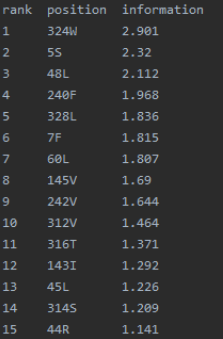
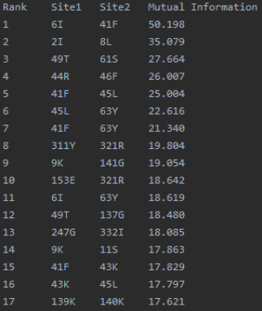
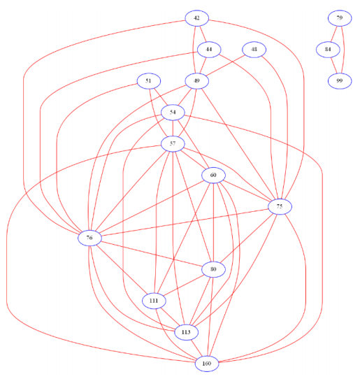

Introduction
ProCon is tool for locating and visualization of evolutionary conservation in protein sequences. The method can identify three types of conservation, namely identity (type I), physicochemical similarity (II), and covariant conservation (III). The conservative sites of type I and II are located with entropy calculation and the third type is identified by calculation of mutual information. The interacting networks formed by covariant pairs can also be identified. All the three types of conservation can be visualized in a representative protein structure. The tool performs exhaustive analysis results of which can be used e.g. for identifying different types of conservative residues, studying protein-protein interactions, explaining consequences of disease-causing mutations and mutant design for protein engineering.
0 Setting up
Environment requirement
The ProCon package is implemented in Python3. In order to properly use the library, please make sure that your project's Python version is later than 3.5. (You may download it from https://www.python.org/downloads/)
The library can be run on both Mac OS X, Windows and Linux.
Online installation
The easiest way to install ProCon is to use pip. Please make sure your pip version is the latest one before you start to install. You can upgrade your pip by using the following command.
python -m pip install --upgrade pipTo install ProCon run:
xxxxxxxxxxpip install ProCon==0.0.1Offline installation
Normally, we use pip install to install ProCon online. But sometimes we may need to use .tar.gz file to install the library. You can refer to the following steps to complete the installation.
Download the
.tar.gzfileInstall wheel model
In command-line window, run:
xxxxxxxxxxpip install wheelInstall
.tar.gzfileIn command-line window, use the command
cdto jump to the directory of theProCon-0.0.1.tar.gzfile run:xxxxxxxxxxpython3 setup.py install ProCon-0.0.1.tar.gz
1 Calculate namely identity
Import a FASTA-format sequence file
The main class of calculating namely identity (type I) is called ProbabilityCalculator. Find the route of your FASTA-format sequence file run:
xxxxxxxxxxpc = ProbabilityCalculator.ProbabilityCalculator("file route")to import the sequence file. The system calculates the results according to the default parameter values. These parameters can also be modified.
Configure parameters
Set gap percent
The second parameter of the
ProbabilityCalculatoris gap percent. Its default value is 0.1 and if you want to modify it (For example 0.2) run:xxxxxxxxxxpc = ProbabilityCalculator.ProbabilityCalculator("file routr", 0.2)Set p values
The third and fourth parameters of the
ProbabilityCalculatoris p-value 1 and p-value 2. Their default value are 0.01 and 0.05. If you want to modify them (For example 0.01 and 0.1) run:xxxxxxxxxxpc = ProbabilityCalculator.ProbabilityCalculator("file routr", 0.2, 0.01, 0.1)
Get the results
The default setting calculates the sequence by classifying it into 20 groups (20 + 'gap'').
Achieve raw result
run
xxxxxxxxxxpc.get_entropy_0()Print sorted result
run
xxxxxxxxxxpc.print_sorted_inf_20()Please notice that the results, few of which have eliminated because their gap percent is over the defined value.
Export sorted result to file
run
xxxxxxxxxxpc.inf_to_file_20("file name")If the file does not exist, the method will create a new one. If the file exists, the method will overwrite it. So please be cautious that if you have a file named the same name before using this method.
Example:

Some useful methods
.get_seq_number()Return the number of sequences in imported FASTA-format sequence file.
.get_res_number()Return the number of residue in a single sequence.
.get_seq()Return the sequences in the sequence file.
.get_seq_names()Return the names of the sequences in the sequence file.
.display_seq()Display all sequences in the terminal.
2 Calculate physicochemical similarity
Physicochemical similarity (type II) is calculated based on the namely identity (type I).
Configure parameters
Set gap percent and p values
If you want the change the parameters such as gap percent, p-value 1 and p-value 2 when calculating physicochemical similarity, you need the use the object instantiated from class
ProbabilityCalculatorto configure the parameters before your initialization.Use
.set_gap_percent(p)to configure the gap percent.Use
.set_p_value_1(p_1)to configure the p-value 1.Use
.set_p_value_2(p_2)to configure the p-value 2.Set amino acid groups
We provide several predesigned groups in the library.
6 groups (default)
run
xxxxxxxxxx.set_default_group()The six groups are named as hydrophobic: C, F, I, L, M, V, W, Y
AT: A, T
negative: D, E
conformational: G, P
polar: N, Q, S
positive: H, K, R
4 groups
run
xxxxxxxxxx.set_group_4()The four groups are named as non polar: A, F, G, I, L, M, P, V, W
uncharged polar: C, N, Q, S, T, Y
acidic: D, E
basic: H, K, R
3 groups
run
xxxxxxxxxx.set_group_3()The three groups are named as essential: F, H, I, K, L, M, T, V, W
non-essential: A, D, E, N, S
conditionally essential: C, G, P, Q, R, Y
7 groups
run
xxxxxxxxxx.set_group_7()The seven groups are named as aliphatic: A, G, I, L, P, V
aromatic: F, W, Y
acidic: D, E
basic: H, K, R
hydroxylic: S, T
sulfur-containing: C, M
amidic: N, Q
The library also enables you to set your own amino acid groups.
Firstly, the number of the groups should be set. Use the method
.set_number_of_group(number), for examplexxxxxxxxxxpc.set_number_of_group(6)Secondly, you have to set the groups' names. Use the method
.set_group_names(group_names), for examplexxxxxxxxxxpc.set_group_names(["hydrophobic", "AT", "negative", "conformational", "polar", "positive", "gap"])Then, a list that represent the group should be set. Use the method
.set_group(group)and the corresponding list isxxxxxxxxxx['A', 'C', 'D', 'E', 'F', 'G', 'H', 'I', 'K', 'L', 'M', 'N', 'P', 'Q', 'R', 'S', 'T', 'V', 'W', 'Y', '-' ]For example
xxxxxxxxxxpc.set_group([1, 0, 2, 2, 0, 3, 5, 0, 5, 0, 0, 4, 3, 4, 5, 4, 1, 0, 0, 0, 6])To do so, amino acid 'A' will be classified to group 1, 'C' will be classified to group 0, 'D' will be classified to group 2 and so on.
At last, the module needs to recalculate the result. (IMPORTANT. If not to do so, the result will still remain the same as the default one) Use the method
.re_calculate()xxxxxxxxxxpc.re_calculate()to update the result.
Initialization
The main class of calculating the physicochemical similarity (type II) is MutualInformation.
To initialize, run:
xxxxxxxxxxmi = MutualInformation.MutualInformation(pc)Get the results
Achieve raw result
run
xxxxxxxxxxmi.get_mut_inf()Display sorted result
run
xxxxxxxxxxmi.print_mutu_info()Export sorted result to file
run
xxxxxxxxxxmi.mut_to_file("file name")The result is a two-dimensional matrix divided by ','. If the file does not exist, the method will create a new one. If the file exists, the method will overwrite it. So please be cautious that if you have a file named the same name before using this method.
Example:

4 Calculate covariant conservation
Initialization
The default group of the amino acid is 20 + 1. If you want to reset the group, see Configure parameters in type II.
The main calss of calculating the covariant conservation (type III) is TripletFinder.
To initialize, run:
xxxxxxxxxxtp = TripletFinder.TripletFinder(mi)Get the results
Achieve raw result
run
xxxxxxxxxxtp.get_triplets()Display result
run
xxxxxxxxxxtp.display_triplets()Export result to file
run
xxxxxxxxxxtp.tps_to_file("file name")If the file does not exist, the method will create a new one. If the file exists, the method will overwrite it. So please be cautious that if you have a file named the same name before using this method.
Example:

Generate graph
run
xxxxxxxxxxtp.show_graph("file name")If the file does not exist, the method will create a new one. If the file exists, the method will overwrite it. So please be cautious that if you have a file named the same name before using this method.
Example:

5 About us
The tool is developed by:
Yang Yang 1, 2 , Neng Qian 2, Guanchen Zhu 2, André Norrgård 3, Mats Aspnäs 3, Jan Westerholm 3, Mauno Vihinen 4, 5 and Bairong Shen 1, *
1 Center for Systems Biology, Soochow University, Suzhou, China
2 School of Computer Science and Technology, Soochow University, Suzhou, China
3 Department of Information Technologies, Åbo Akademi University, Finland
4 Institute of Medical Technology, FI-33014 University of Tampere, Finland
5 Science Center, Tampere University Hospital, FI-33520 Tampere, Finland
Email: 1729401199@stu.suda.edu.cn、yyang@suda.edu.cn
© 2005 - 2021
School of Computer Science and Technology, Soochow University, Suzhou, China
and
Institute of Biomedical Technology, University of Tampere, Finland